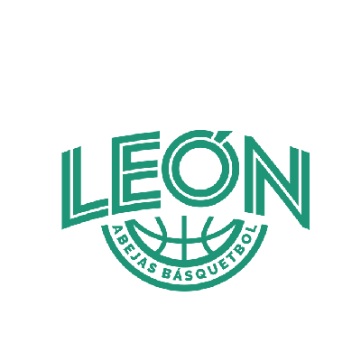
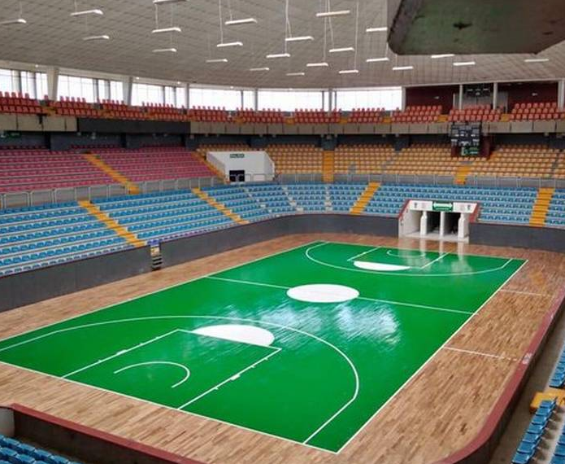
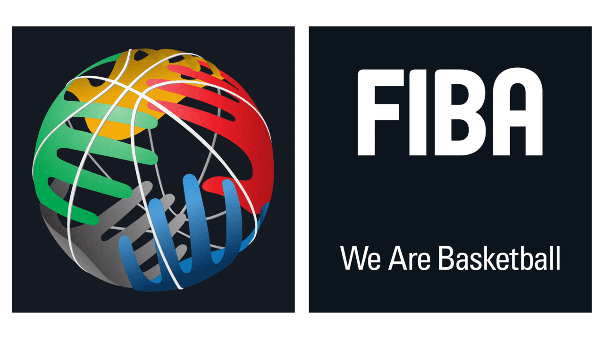
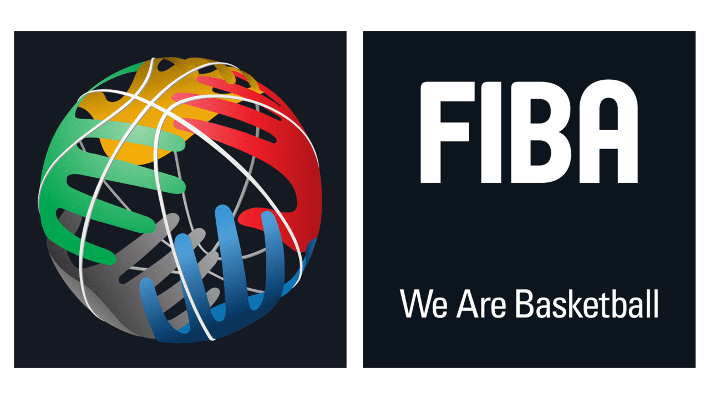

CNMB
| Escudo |
|---|
|  |
| Datos |
| Nombre: Abejas de Leon Anio de Fundacion: 2009 Ciudad: Leon, Guanajuato Estadio: Domo de la Feria Capacidad: 4,426 Sitio web: http://www.solesmexicali.com/ |
| Historia |
|
El equipo orginalmente tenia el nombre de Bravos de Piedras Negras, en Coahuila pero despues de que la Universidad de Leon adquirio la franquicia fue relocalizada en la ciudad y nombre del municipio. El primer titulo llego en la temporada 2022 de la LNBP. |
| Estadio |
|  |
 
